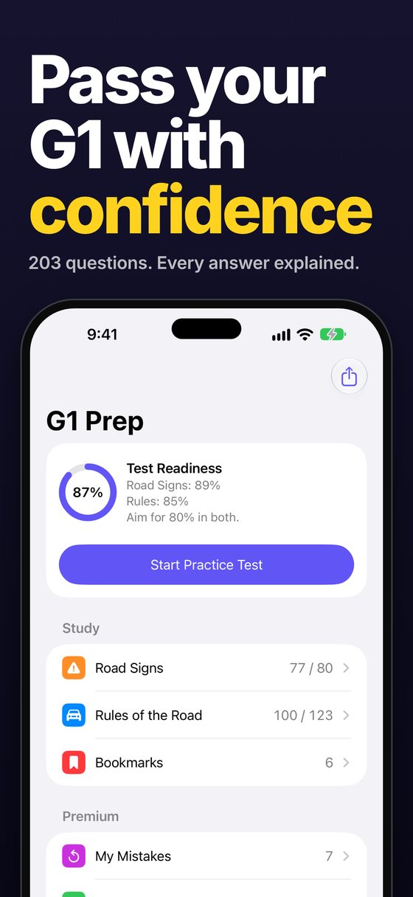
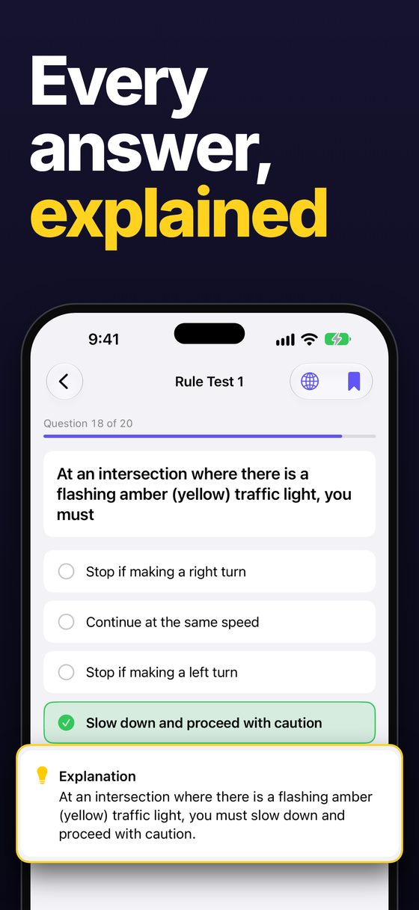
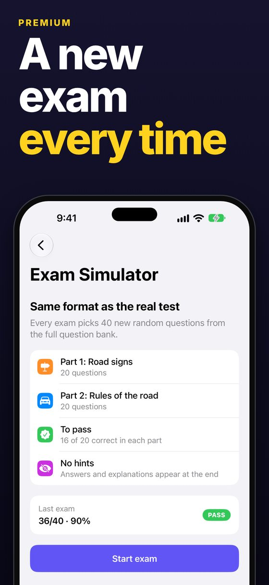

Get ready for your Ontario G1
G1 Prep is a practice app for the Ontario G1 knowledge test. Study every road sign and rule, then take full 40-question practice tests. In English or ਪੰਜਾਬੀ.
Download on the App StoreFree to download on iPhone and iPad. Want everything unlocked? Pay CA$9.99 once. No subscription.



What is in the app
80 road sign questions
Each with a clear picture of the sign and a short explanation.
123 rules of the road questions
Every answer explained in plain language.
6 practice tests
40 questions each, in the same format as the G1 knowledge test.
Exam Simulator
40 new random questions every time, no hints, scored like the G1. Part of Premium.
My Mistakes and My Progress
Review what you got wrong and see what to study next. Part of Premium.
English and Punjabi
Switch any question between the two languages with one tap.
Works offline
All questions are stored on your device.
iPhone and iPad
A simple design with light and dark mode.
How the G1 knowledge test works
The G1 is the written knowledge test for new drivers in Ontario. It has 40 multiple-choice questions in two sections, and you need at least 16 correct answers in each section to pass.
| Section | Questions | To pass |
|---|---|---|
| Road signs | 20 | 16 correct |
| Rules of the road | 20 | 16 correct |
Test details can change. Check the Government of Ontario and DriveTest websites for current requirements, fees and locations.
Free and Premium
| Free | G1 Premium | |
|---|---|---|
| All 203 study questions with explanations | Yes | Yes |
| Practice tests 1 and 2 | Yes | Yes |
| Practice tests 3 to 6 | One attempt per short ad | Yes |
| Exam Simulator, My Mistakes, My Progress | Yes | |
| Ads | Yes | None |
| Price | Free | CA$9.99 once, no subscription |
Questions and answers
Is G1 Prep free?
Yes. All study questions and practice tests 1 and 2 are free, with ads. G1 Premium is an optional one-time purchase of CA$9.99. There is no subscription.
Is it available in Punjabi?
Yes. Every question and explanation is available in English and Punjabi.
Does it work without internet?
Yes. All questions are stored on your device, so you can study anywhere.
Is this the official G1 test?
No. G1 Prep is an independent study aid. It is not affiliated with or endorsed by the Ministry of Transportation of Ontario or DriveTest. We recommend reading Ontario's Official Driver's Handbook as well. Practice helps, but no app can guarantee a result.
How do I get help or send feedback?
Use the Feedback option in the app's Settings tab.